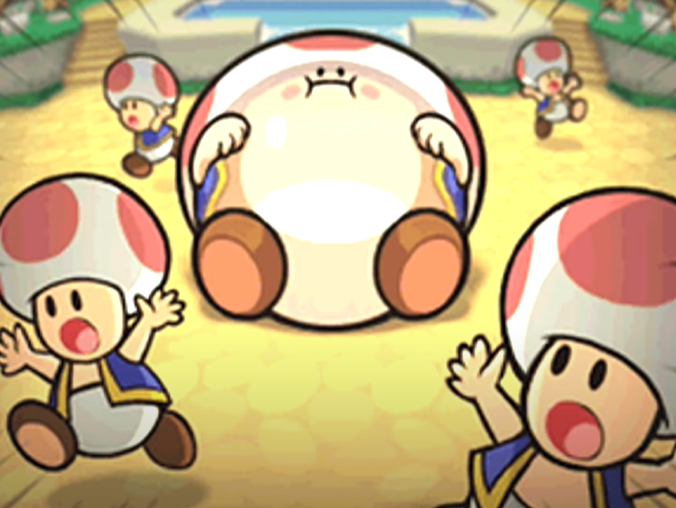
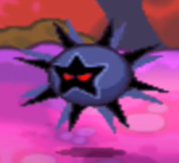

Goal and Motive


Blorb
Dark Star
Fawfuls first goal may have been to help Cackletta in the game M&L Superstar Saga as said in the background tab. Since this failed however,
he came up with a plan on his own while hiding in the sewers for half a decade which is shown in M&L Partners in Time. He got to know of a
powerful item called the Dark Star and how to get to it. However in order to get to it he needed to distract everyone in the mushroom kingdom.
In order to do that he invented a disease that made toads swell up like balloons, this of course would get the mushroom kingdoms attention and
make sure that he wouldn't be in the spotlight. But he did not only do that, he also made Bowser eat a mushroom that made him inhale all in his path.
He did this to trap his greatest enemies, Mario and Luigi, inside his third greatest. The path would then be clear for him with no one to stop him and
he would also have gotten revenge on his enemies.
Kontakt: berg.gustav@elev.ga.ntig.se